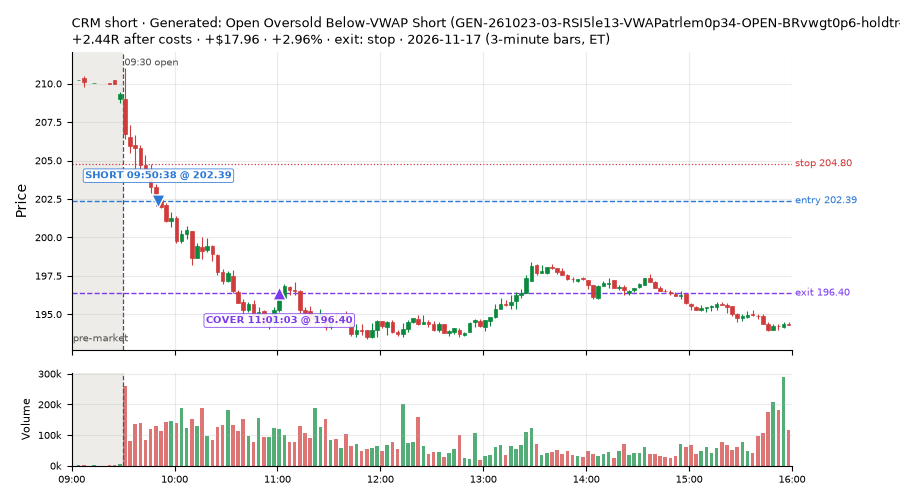
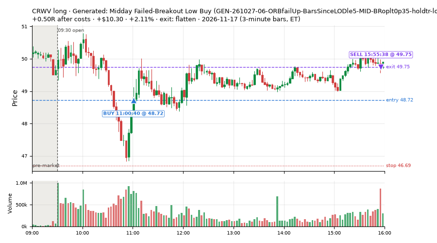
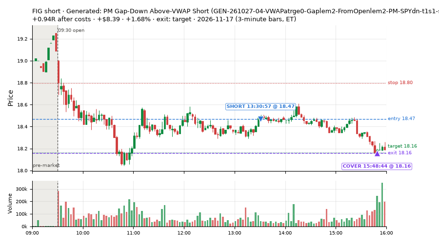
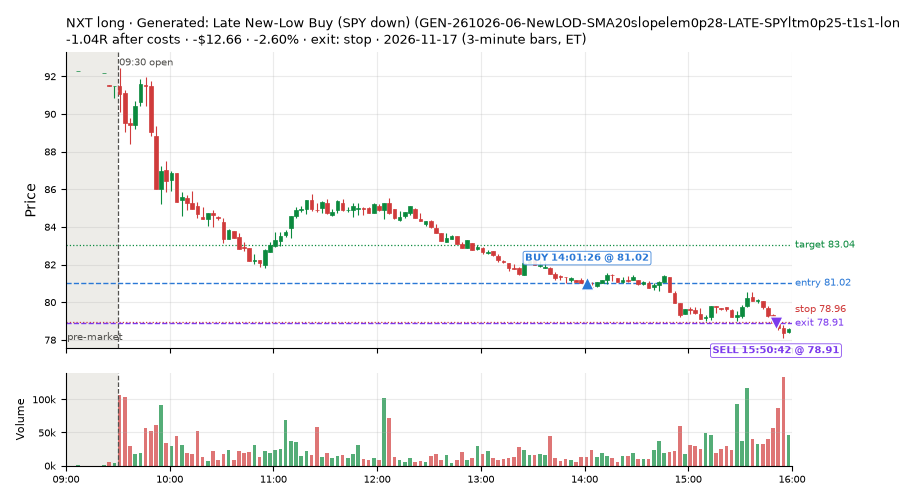
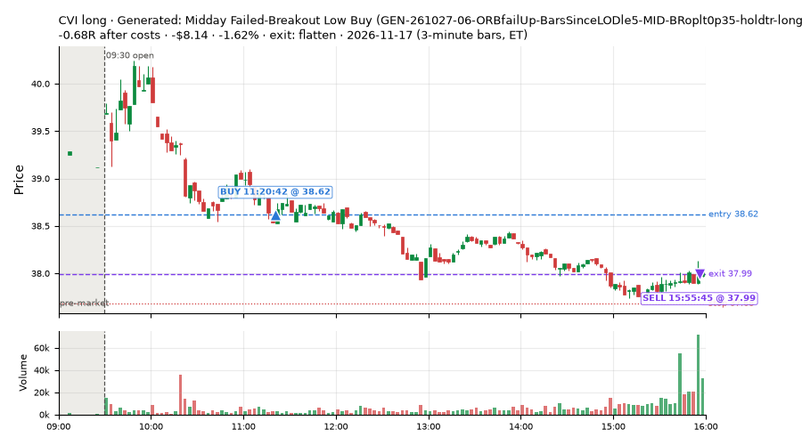
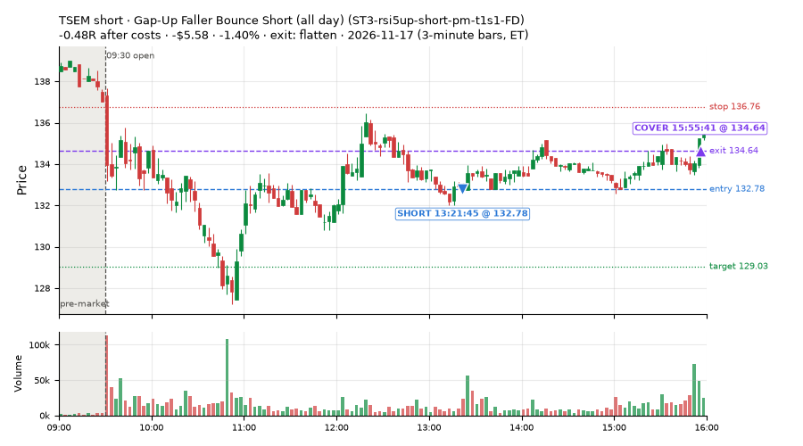
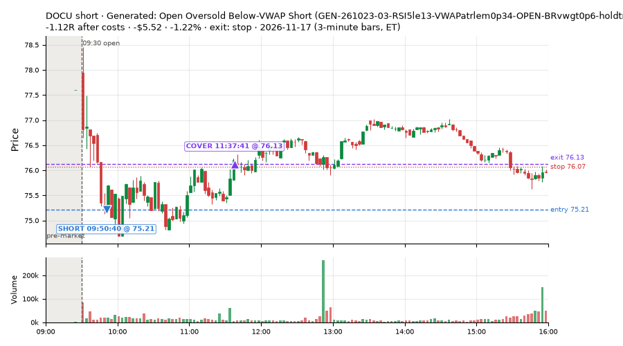
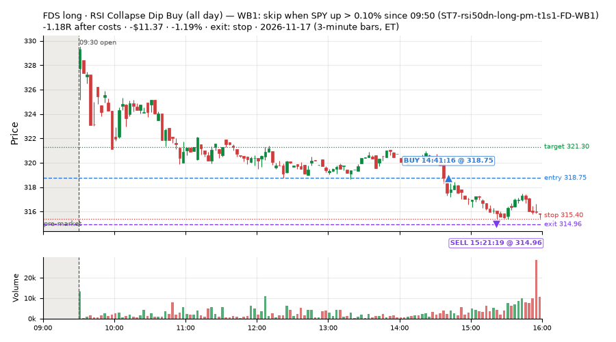

62 trades · win rate 52% · P/L $-7.13
PROBATION: no live setup has passed both locked test periods. 10 owner-directed setups added 2026-10-08 (MarcoFlow top 5 + 5 new), untested live. RW6G1 (RW6 + VWAP band guard) added 2026-10-09, probation.

| Symbol | Setup | Side | In | Out | Entry | Exit | Exit reason | % gained | P/L |
|---|---|---|---|---|---|---|---|---|---|
| CRM | Generated: Open Oversold Below-VWAP Short (GEN-261023-03-RSI5le13-VWAPatrlem0p34-OPEN-BRvwgt0p6-holdtr-short) | short | 09:50 | 11:01 | 202.39 | 196.40 | stop | +2.96% | $17.96 |
| CRWV | Generated: Midday Failed-Breakout Low Buy (GEN-261027-06-ORBfailUp-BarsSinceLODle5-MID-BRoplt0p35-holdtr-long) | long | 11:00 | 15:55 | 48.72 | 49.75 | flatten | +2.11% | $10.30 |
| FIG | Generated: PM Gap-Down Above-VWAP Short (GEN-261027-04-VWAPatrge0-Gaplem2-FromOpenlem2-PM-SPYdn-t1s1-short) | short | 13:30 | 15:48 | 18.47 | 18.16 | target | +1.68% | $8.39 |
| Symbol | Setup | Side | In | Out | Entry | Exit | Exit reason | % lost | P/L |
|---|---|---|---|---|---|---|---|---|---|
| NXT | GEN-261026-06-NewLOD-SMA20slopelem0p28-LATE-SPYltm0p25-t1s1-long | long | 14:01 | 15:50 | 81.02 | 78.91 | stop | -2.60% | $-12.66 |
| CVI | GEN-261027-06-ORBfailUp-BarsSinceLODle5-MID-BRoplt0p35-holdtr-long | long | 11:20 | 15:55 | 38.62 | 37.99 | flatten | -1.62% | $-8.14 |
| TSEM | ST3-rsi5up-short-pm-t1s1-FD | short | 13:21 | 15:55 | 132.78 | 134.64 | flatten | -1.40% | $-5.58 |
| DOCU | GEN-261023-03-RSI5le13-VWAPatrlem0p34-OPEN-BRvwgt0p6-holdtr-short | short | 09:50 | 11:37 | 75.21 | 76.13 | stop | -1.22% | $-5.52 |
| FDS | ST7-rsi50dn-long-pm-t1s1-FD-WB1 | long | 14:41 | 15:21 | 318.75 | 314.96 | stop | -1.19% | $-11.37 |








Signal to fill: median 2s, 90th percentile 4s (62 trades). Bars close each minute; the order follows the bar close.
Best excursion (MFE): median 0.59R; worst (MAE) median 0.35R. 24% of trades never got +0.25R in our favour; 2 reached +1R and still closed at or below 0.
| Symbol | Setup | Best R | Worst R | Closed R |
|---|---|---|---|---|
| DOCU | GEN-261023-03-RSI5le13-VWAPatrlem0p34-OPEN-BRvwgt0p6-holdtr-short | +0.61 | -1.06 | -1.12 |
| BWA | GEN-261027-06-ORBfailUp-BarsSinceLODle5-MID-BRoplt0p35-holdtr-long | +0.64 | -1.00 | -1.05 |
| HSIC | GEN-261027-06-ORBfailUp-BarsSinceLODle5-MID-BRoplt0p35-holdtr-long | +0.50 | -1.04 | -1.00 |
| RJF | GEN-261027-06-ORBfailUp-BarsSinceLODle5-MID-BRoplt0p35-holdtr-long | +0.33 | -1.08 | -1.17 |
| PAYX | GEN-261027-06-ORBfailUp-BarsSinceLODle5-MID-BRoplt0p35-holdtr-long | +0.32 | -1.03 | -1.10 |
| Entry time | Trades | Win | Avg R | P/L |
|---|---|---|---|---|
| 09:50-10:30 | 4 | 75% | +0.72 | $22.44 |
| 10:30-11:30 | 22 | 55% | -0.20 | $3.78 |
| 11:30-13:00 | 9 | 56% | -0.00 | $-2.55 |
| 13:00-14:00 | 10 | 50% | +0.03 | $7.61 |
| 14:00-16:00 | 17 | 41% | -0.25 | $-38.41 |
| Setup | Trades | Win | Avg R after costs | Adj R (net of SPY) | Avg R ex-market (all sessions) | P/L |
|---|---|---|---|---|---|---|
| Panic Flush Reversal (deep, 3x volume) (CWT05-flush-m075-v3-long) | 2.0 | 0% | -1.14 | -1.41 | -0.22 (beta +1.11, n 12) | $-7.00 |
| Generated: Open First-Dip Short (extended) (GEN-261022-04-RSI2le0-Eff6ge0p83-SMA20dge0p59-OPEN-BRvwlt0p5-t1s1-short) | 1.0 | 100% | +0.74 | +0.40 | – | $4.48 |
| Generated: Open Oversold Below-VWAP Short (GEN-261023-03-RSI5le13-VWAPatrlem0p34-OPEN-BRvwgt0p6-holdtr-short) | 2.0 | 50% | +0.66 | -0.20 | – | $12.44 |
| Generated: Late New-Low Buy (SPY down) (GEN-261026-06-NewLOD-SMA20slopelem0p28-LATE-SPYltm0p25-t1s1-long) | 8.0 | 25% | -0.60 | -0.55 | -0.28 (beta +1.50, n 19) | $-27.32 |
| Generated: PM Gap-Down Above-VWAP Short (GEN-261027-04-VWAPatrge0-Gaplem2-FromOpenlem2-PM-SPYdn-t1s1-short) | 6.0 | 67% | +0.11 | -0.05 | -0.52 (beta -2.30, n 16) | $13.61 |
| Generated: Midday Failed-Breakout Low Buy (GEN-261027-06-ORBfailUp-BarsSinceLODle5-MID-BRoplt0p35-holdtr-long) | 20.0 | 40% | -0.35 | -0.18 | -0.33 (beta +0.37, n 29) | $-21.45 |
| Generated: Late-AM Gap-Up Failed-Break Short (GEN-261027-09-ORBfailDn-Gapge2-Slope6ge0p03-LAM-BRvwlt0p5-t05s05-short) | 5.0 | 100% | +0.46 | +0.28 | +0.35 (beta -0.43, n 5) | $22.17 |
| Generated: Late Upper-Wick Short (SPY down) (GEN-261029-07-UpWickge0p59-DayRngVsPrevle0p42-LATE-SPYltm0p5-t05s1-short) | 6.0 | 83% | +0.39 | +0.12 | +0.13 (beta -0.87, n 29) | $11.02 |
| Gap-Down Pop Fade, Heavy Selling (all day) — WB4: up-day entry cut + SPY exit 0.30% (RW3-gapdn-rsi5pop-flowsell-short-FD-WB4) | 6.0 | 83% | +0.48 | +0.03 | +0.06 (beta -1.70, n 6) | $10.96 |
| Big Gainer SMA50 Cross Fade (all day) (RW6-ns2-up3-short-FD) | 1.0 | 100% | +0.81 | +0.33 | -0.19 (beta -0.67, n 8) | $5.52 |
| Gap-Up Faller Bounce Short (all day) (ST3-rsi5up-short-pm-t1s1-FD) | 1.0 | 0% | -0.48 | -0.54 | -0.10 (beta -1.47, n 14) | $-5.58 |
| Prior-Day-High Break Fade (all day) (ST5-pdbrkup-short-mid-t05s1-FD) | 3.0 | 0% | -0.27 | -0.32 | -0.24 (beta -0.81, n 7) | $-14.61 |
| RSI Collapse Dip Buy (all day) — WB1: skip when SPY up > 0.10% since 09:50 (ST7-rsi50dn-long-pm-t1s1-FD-WB1) | 1.0 | 0% | -1.18 | -1.15 | – | $-11.37 |
Market direction (SPY, beta 1) accounted for $29.25 of today's $-7.13; the rest ($-36.38) came from the setups themselves. Avg R net of SPY: -0.18 (incl. a hedge leg's cost; report only).
25 setups live today. Today: 139 signals, 62 taken, 0 lost because another setup held the symbol (0%). Since 2026-11-05 (9 sessions): 447 signals, 194 taken, 1 lost to other setups (0%). Peak open positions today 31 of 400 slots. Earnings blackout removed 329 symbols before scanning.
Simulated playing time (not live): 252 what-if trades of signals not taken, avg -0.04R, 53% winners; of them 1 lost to another setup (avg +0.50R).
Silent: IDX1-qqq100-0955-TQQQ-trail, LD6-spy-dip020atr-breadthturn-spxl-holdtr-long, IDX3-spy075-0955-3x-trail, LD5-st2-breadthup-t05s1-long, NM-RWN4-ns2-spyup05-notfri-short
| Prio | Setup | Today sig / taken | Sessions | Signals / taken / trades | Taken/day | Expected/day | Lost to other setups | Lost to (setup n) | Top skip reasons | SIMULATED: not-taken n / avg R / win | Verdict |
|---|---|---|---|---|---|---|---|---|---|---|---|
| 1 | Gap-Down Pop Fade, Heavy Selling (all day) — WB4: up-day entry cut + SPY exit 0.30% RW3-gapdn-rsi5pop-flowsell-short-FD-WB4 | 11 / 6 | 1 | 11 / 6 / 6 | 6.00 | – | 0 | – | spread / quote / size 3, other 2 | 5 / +0.35R / 80% | ok 30.0 entries/week |
| 2 | RSI Collapse Dip Buy (all day) — WB1: skip when SPY up > 0.10% since 09:50 ST7-rsi50dn-long-pm-t1s1-FD-WB1 | 3 / 1 | 1 | 3 / 1 / 1 | 1.00 | – | 0 | – | spread / quote / size 1, other 1 | 2 / -0.15R / 50% | slow 5.0 entries/week; ~12 weeks to 60 trades |
| 3 | 20-Minute Opening Range Breakout — WB3: top 10 in play + price >= $20 orb20_a-WB3 | 1 / 0 | 1 | 1 / 0 / 0 | 0.00 | – | 0 | – | spread / quote / size 1 | 1 / -1.14R / 0% | slow no entries yet |
| 4 | Index Dip Bounce 1 TQQQ IDX1-qqq100-0955-TQQQ-trail | 0 / 0 | 9 | 0 / 0 / 0 | 0.00 | – | 0 | – | – | 0 / – | silent no signals in 9 session(s); no expected rate on file |
| 5 | * SPY Dip of 0.2 ATR, Breadth Turn (SPXL, trailing) (near-miss) LD6-spy-dip020atr-breadthturn-spxl-holdtr-long | 0 / 0 | 9 | 0 / 0 / 0 | 0.00 | – | 0 | – | – | 0 / – | silent no signals in 9 session(s); no expected rate on file |
| 6 | * Oversold Pop after an SPY Dip-Turn (trailing) (near-miss) LD7-ns1-idxturn-holdtr-long | 0 / 0 | 9 | 5 / 4 / 4 | 0.44 | – | 0 | – | price through stop/target 1 | 1 / -0.30R / 0% | slow 2.2 entries/week; ~27 weeks to 60 trades |
| 7 | Gap-Down Reclaim Fade, Afternoon (near-miss) NM-PM-gapdn-above-pdh-rvol-short | 0 / 0 | 9 | 1 / 0 / 0 | 0.00 | – | 0 | – | spread / quote / size 1 | 1 / +1.28R / 100% | slow no entries yet |
| 8 | Generated: Late Upper-Wick Short (SPY down) GEN-261029-07-UpWickge0p59-DayRngVsPrevle0p42-LATE-SPYltm0p5-t05s1-short | 10 / 6 | 2 | 33 / 29 / 29 | 14.50 | – | 0 | – | other 4 | 4 / +0.30R / 100% | ok 72.5 entries/week |
| 9 | Generated: Late New-Low Buy (SPY down) GEN-261026-06-NewLOD-SMA20slopelem0p28-LATE-SPYltm0p25-t1s1-long | 12 / 8 | 2 | 26 / 19 / 19 | 9.50 | – | 0 | – | other 5, spread / quote / size 2 | 7 / -0.01R / 57% | ok 47.5 entries/week |
| 10 | Generated: PM VWAP Reclaim Buy (SPY up) GEN-261019-06-VWAPxUp-EMAdiffge0p29-PM-SPYgt0p5-holdtr-long | 0 / 0 | 2 | 0 / 0 / 0 | 0.00 | – | 0 | – | – | 0 / – | quiet - wait no signals in 2 session(s); too early to tell |
| 11 | Generated: PM Failed-Breakdown Buy GEN-261026-10-ORBfailDn-EMAdChglem0p051-PM-BRopgt0p65-t1s1-long | 0 / 0 | 2 | 0 / 0 / 0 | 0.00 | – | 0 | – | – | 0 / – | quiet - wait no signals in 2 session(s); too early to tell |
| 12 | Generated: Midday Failed-Breakout Low Buy GEN-261027-06-ORBfailUp-BarsSinceLODle5-MID-BRoplt0p35-holdtr-long | 47 / 20 | 2 | 70 / 29 / 29 | 14.50 | – | 0 | – | spread / quote / size 23, other 18 | 41 / -0.37R / 34% | ok 72.5 entries/week |
| 13 | Generated: Midday Volume Buy (volatile) GEN-261027-05-VolRatioge1p5-ORLdistge0p41-ATRdge6-MID-BRvwgt0p7-t05s1-long | 0 / 0 | 2 | 0 / 0 / 0 | 0.00 | – | 0 | – | – | 0 / – | quiet - wait no signals in 2 session(s); too early to tell |
| 14 | Prior-Day-High Break Fade (all day) ST5-pdbrkup-short-mid-t05s1-FD | 3 / 3 | 9 | 17 / 7 / 7 | 0.78 | 0.78 | 0 | – | not shortable / shorts off 8, spread / quote / size 2 | 10 / -0.51R / 40% | slow 3.9 entries/week; ~15 weeks to 60 trades |
| 15 | Backside VWAP-Test Short CWT04-backside-vwaptest-a15-short | 0 / 0 | 9 | 7 / 0 / 0 | 0.00 | – | 0 | – | not shortable / shorts off 5, spread / quote / size 1, other 1 | 7 / -0.28R / 29% | slow no entries yet |
| 16 | Generated: PM Gap-Down Above-VWAP Short GEN-261027-04-VWAPatrge0-Gaplem2-FromOpenlem2-PM-SPYdn-t1s1-short | 11 / 6 | 2 | 28 / 16 / 16 | 8.00 | – | 0 | – | not shortable / shorts off 4, spread / quote / size 4, other 4 | 12 / +0.14R / 75% | ok 40.0 entries/week |
| 17 | * Shallow Nasdaq Dip, Breadth Turn (TQQQ) (near-miss) LD2-qqq-dip015-breadthturn-tqqq-t05s1-long | 0 / 0 | 9 | 2 / 2 / 2 | 0.22 | – | 0 | – | – | 0 / – | slow 1.1 entries/week; ~54 weeks to 60 trades |
| 18 | Early NS3 Short While QQQ Up (near-miss) NM-RWR3-ns3-qqqup-early-short | 0 / 0 | 9 | 20 / 7 / 7 | 0.78 | – | 0 | – | spread / quote / size 7, not shortable / shorts off 5, other 1 | 13 / +0.31R / 69% | slow 3.9 entries/week; ~15 weeks to 60 trades |
| 19 | Generated: Open Oversold Below-VWAP Short GEN-261023-03-RSI5le13-VWAPatrlem0p34-OPEN-BRvwgt0p6-holdtr-short | 4 / 2 | 2 | 4 / 2 / 2 | 1.00 | – | 0 | – | spread / quote / size 2 | 2 / +1.65R / 50% | slow 5.0 entries/week; ~12 weeks to 60 trades |
| 20 | Gap-Up Faller Bounce Short (all day) ST3-rsi5up-short-pm-t1s1-FD | 3 / 1 | 9 | 25 / 14 / 14 | 1.56 | 1.35 | 0 | – | not shortable / shorts off 8, spread / quote / size 2, other 1 | 11 / -0.49R / 18% | slow 7.8 entries/week; ~8 weeks to 60 trades |
| 21 | Generated: Open First-Dip Short (extended) GEN-261022-04-RSI2le0-Eff6ge0p83-SMA20dge0p59-OPEN-BRvwlt0p5-t1s1-short | 3 / 1 | 2 | 7 / 1 / 1 | 0.50 | – | 0 | – | spread / quote / size 3, not shortable / shorts off 2, other 1 | 6 / +0.18R / 67% | slow 2.5 entries/week; ~24 weeks to 60 trades |
| 22 | Generated: Late-AM Gap-Up Failed-Break Short GEN-261027-09-ORBfailDn-Gapge2-Slope6ge0p03-LAM-BRvwlt0p5-t05s05-short | 19 / 5 | 2 | 21 / 5 / 5 | 2.50 | – | 0 | – | spread / quote / size 12, not shortable / shorts off 2, other 2 | 16 / +0.60R / 88% | slow 12.5 entries/week; ~5 weeks to 60 trades |
| 23 | Panic Flush Reversal (deep, 3x volume) CWT05-flush-m075-v3-long | 4 / 2 | 9 | 23 / 12 / 12 | 1.33 | – | 0 | – | other 6, spread / quote / size 2, broker rejected 2 | 10 / -0.17R / 60% | slow 6.7 entries/week; ~9 weeks to 60 trades |
| 24 | Spike-Pullback Flag Breakout CWT12-flag-s1-long | 0 / 0 | 9 | 12 / 8 / 8 | 0.89 | – | 0 | – | other 3, broker rejected 1 | 4 / +0.20R / 75% | slow 4.4 entries/week; ~14 weeks to 60 trades |
| 25 | Big Gainer SMA50 Cross Fade (all day) RW6-ns2-up3-short-FD | 8 / 1 | 3 | 18 / 8 / 8 | 2.67 | 7.12 | 0 | – | not shortable / shorts off 7, spread / quote / size 2, other 1 | 10 / +0.20R / 70% | slow 13.3 entries/week; ~4 weeks to 60 trades |
Every trade is attached as a CSV you can open and edit in Excel or Google Sheets. Live page: https://misiti15.github.io/MCF/live/